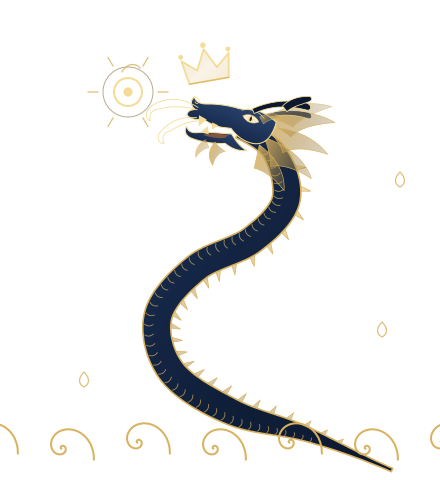
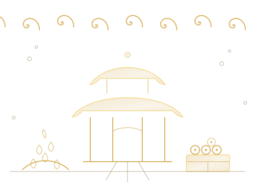
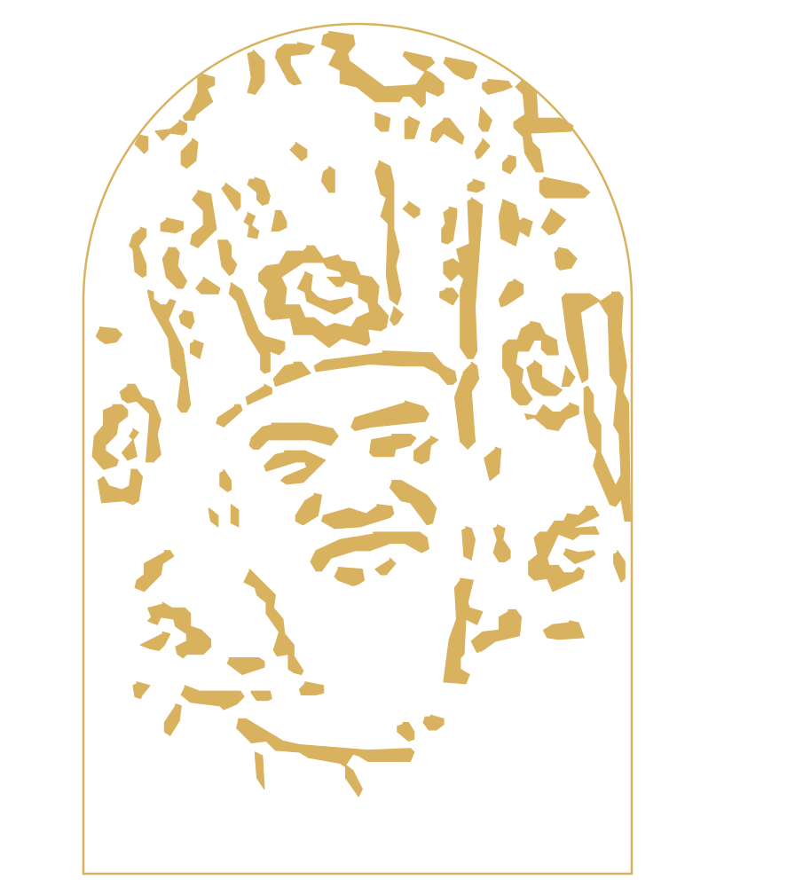
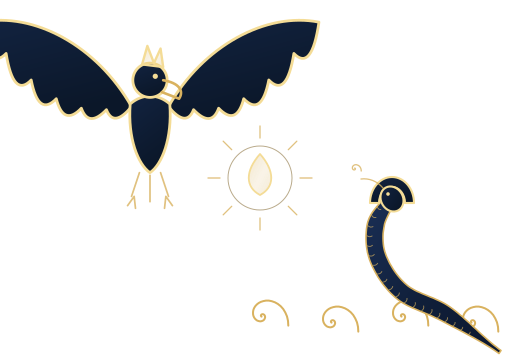

Throughout Buddhist scriptures we encounter powerful nonhuman beings known in Sanskrit as nāgas. They appear in the assemblies of the Buddha, inhabit oceans, rivers and springs, guard treasures and sacred teachings, influence rain and the natural world, and in many texts become protectors of the dharma.
When Buddhism travelled from India into China, nāga was translated as 龍 (long), “dragon.” This is why Chinese Buddhist scriptures speak of dragons where Indian sources speak of nagas.
The naga has its origins in ancient Indian tradition and is closely associated with serpents. Buddhist literature and art portray nagas in different ways: as great serpents, as beings combining human and serpentine characteristics, or as beings capable of assuming human form.
Within Buddhism, however, nagas are not simply mythological serpents. They are sentient beings living within samsara. They have their own realms and rulers, experience the results of karma, hear and practise the dharma, and can aspire to awakening.
Nagas and Nagarajas
Nāga is the general name for this class of nonhuman beings. Nāgarāja combines nāga with rāja, the Sanskrit word for “king.” A nāgarāja is therefore a Naga King, an eminent naga who rules over other nagas.
All Naga Kings are nagas, but not all nagas are Naga Kings.

Sāgara is one of the most important examples. His Sanskrit name Sāgara means “ocean,” and he is known as Sāgara Nāgarāja, the Naga King Sāgara, or the Sea Dragon King.
He is the central Dragon King in the Sutra Spoken by the Buddha on the Sea Dragon King and related Sāgara scriptures.
Where Do Nagas Live?
Nagas are closely associated with water and the subterranean world. Buddhist scriptures place them in oceans, rivers, lakes and other bodies of water, as well as in realms beneath the earth. Great Naga Kings are described as possessing their own palaces and domains.
These are not always portrayed as simple underwater caves. Buddhist literature describes magnificent naga realms containing palaces, gardens, jewels and other treasures.
Sāgara’s palace beneath the ocean is particularly important in Mahayana Buddhism. In The Questions of the Nāga King Sāgara, the Buddha travels to Sāgara’s palace in the ocean and teaches there — as he does in the tenth chapter of this sutra. The scripture also presents the Buddha intervening in the traditional conflict between the nagas and garudas. 84000
The treasures associated with the naga realm are not only material. Nagas are also remembered as custodians of Buddhist scriptures.
According to traditional biographies of the great Buddhist master Nāgārjuna, profound Prajñāpāramitā, or Perfection of Wisdom, scriptures had been preserved in the naga realm. Nāgārjuna travelled there, taught the nagas and brought the scriptures back into the human world. This became one of the best-known stories associated with his life. Tibetan Buddhist Encyclopedia
The image of a Dragon Palace filled with treasure therefore has more than one meaning. There are jewels and riches, but there are also treasures of dharma.

This helps explain why nagas so often appear as guardians and protectors of Buddhist teachings. Their hidden realms can be places where the dharma itself is safeguarded. In the Dragon King Sutra, this relationship takes another form: the Buddha himself enters the ocean realm and teaches there. The Dragon Palace becomes a place where the dharma is heard, received and preserved.
The Dragon Clan and Karma
Nagas may possess great supernatural powers, and some serve as dharma protectors, but power and longevity are not the same as spiritual attainment. Like other sentient beings within samsara, they remain subject to karma and suffering. Through practising the dharma, however, they too can progress on the path toward liberation and buddhahood.
Traditional Buddhist teachings sometimes connect rebirth as a naga with spiritual cultivation in previous lives. Some accounts describe practitioners who accumulated considerable merit but also committed faults, such as failing to observe the precepts purely. Their merit may account for wealth, longevity and supernatural abilities, while unresolved karma results in continued rebirth within samsara.
This helps explain an apparent contradiction in descriptions of the naga realm. A naga may possess extraordinary merit and power while still experiencing considerable suffering.
Nagas should therefore not simply be thought of as gods, nor are they ordinary animals. They are a class of nonhuman sentient beings with their own rulers, communities and circumstances of existence. Some enjoy great wealth and favourable conditions, while others suffer. Some are benevolent, while others may be hostile. Like humans, their circumstances and dispositions differ according to their karma.
Most importantly, they can receive the dharma and progress along the path to awakening.
The Three Burning Sufferings of the Nagas
Despite their long lives and extraordinary abilities, traditional Buddhist teachings describe nagas as enduring particular forms of suffering. Tibetan Buddhist teachings commonly speak of three distinctive sufferings, sometimes called the Three Burning Sufferings of the nagas.
The first is the torment of burning sand. Scorching sand is said to rain down upon the nagas, burning their bodies and causing terrible pain.
The second concerns their bodily form. Although nagas may manifest in beautiful human-like forms, traditional accounts describe circumstances in which they involuntarily revert to serpent form, including during intimate relations. This transformation causes humiliation and distress.
The third is their fear of the garudas.
Garudas are great bird-like beings traditionally regarded as the enemies and predators of nagas. Nagas live with the danger of being seized and devoured by them.
This ancient hostility appears repeatedly in Buddhist literature. Yet the dharma also offers the possibility of overcoming it. In the Sāgara literature, the Buddha acts as a peacemaker between nagas and garudas, showing that even a relationship defined by fear and predation need not remain that way forever.
Nagas and the Natural World
The connection between nagas and the natural environment is particularly prominent in Tibetan Buddhism, where nagas are known as lu or klu (ཀླུ་).
They are traditionally associated with springs, lakes, rivers, forests, trees, rocks and underground places. Certain locations may be regarded as naga dwellings, and disturbing them is treated seriously.
Polluting water, contaminating springs, damaging certain trees, disturbing rocks, excavating the earth or otherwise harming places associated with nagas are traditionally believed to cause them suffering and, in some circumstances, provoke their displeasure.
This gives the traditional understanding of nagas an important environmental dimension. A spring is not simply a source of water, nor is a river merely a resource to be used. Human beings share the natural world with innumerable forms of life, both visible and invisible. We may not always know what else inhabits a place or how our actions affect other beings.
From this perspective, care for the environment is also an expression of care for sentient beings.
Nagas, Rain and the Weather
The association between nagas and water extends to the weather.
Buddhist scriptures attribute to nagas an influence over rain, clouds and the availability of water. Nagas are described as bringing timely rain and nourishing crops, and ritual texts contain practices beseeching Naga Kings to bring rain during drought and to stop excessive rainfall.
The Great Cloud, for example, brings together a vast assembly of Naga Kings and contains practices concerned with rainfall. The text describes the nagas making offerings to the Buddha and taking vows before him, and elsewhere in the scripture Naga Kings are called upon in rites for bringing rain. 84000
A striking modern account concerns the Sixteenth Gyalwa Karmapa, Rangjung Rigpe Dorje — one of the four lineage gurus of Living Buddha Lian Sheng — during his visit to the Hopi Nation in the United States in 1974.
The region had been suffering from a prolonged drought. According to accounts of the visit, Hopi elders spoke to the Karmapa about the absence of rain. The Karmapa subsequently performed prayers and ritual practices.
His driver, Steve Roth, later recalled watching clouds form while the Karmapa was chanting and making mudras. The clouds gathered, the sky darkened and a heavy downpour followed.
Jigme Rinpoche later related the episode specifically to the nagas. According to this account, the Karmapa explained that local nagas were sick and instructed monks to place blessed medicinal pills in a spring associated with them. The nagas recovered, after which the rain came.

Within the Tibetan Buddhist understanding of the event, the Karmapa was not simply commanding supernatural beings to produce rain. The problem was an imbalance involving the nagas themselves. Helping the nagas restored harmony, and the rain returned.
This story brings together several aspects of traditional naga belief: their association with springs and water, their susceptibility to illness, their influence upon rainfall, and the possibility of restoring harmony between nagas, humans and the environment.
Nagas and Illness
Just as nagas themselves may suffer, Tibetan Buddhism and traditional Tibetan medicine hold that disturbances involving nagas can sometimes affect human health.
According to this understanding, when humans pollute or damage places associated with nagas, the nagas may become sick, distressed or angry. Their disturbance may in turn manifest as harm to humans.
Naga disturbances are traditionally associated particularly with certain skin diseases, sores, swellings and persistent illnesses, although classifications differ among texts and traditions.
This does not mean that every unexplained illness is attributed to nagas. Traditional Tibetan systems recognize many different causes of disease. These teachings belong to traditional Buddhist and Tibetan understandings of illness and are not a substitute for appropriate medical diagnosis or treatment.
What is important here is the reciprocal nature of the relationship. Humans can harm nagas, and nagas can harm humans. Harm on either side can lead to further suffering. The Buddhist response is therefore not necessarily to regard the naga as an enemy. Instead, practices may be performed to repair the damaged relationship.
Making Peace with the Nagas
Tibetan Buddhism preserves a number of practices for making offerings to nagas, purifying offences committed against them, relieving their suffering and restoring a harmonious relationship between nagas, humans and the places they inhabit.
One important example is Lasel Chenmo: A Sang Offering to the Nāgas, a practice attributed to Padmasambhava and preserved in the Tibetan tradition by Karma Chakmé. The text itself concludes by stating that this great sang offering to the nagas was composed by Padmasambhava. Lotsawa House
The practice gives a vivid picture of the traditional relationship between nagas and the natural world. Offerings are made to nagas dwelling in mountains, flowing water, rocks, oceans and springs, as well as to the Eight Great Nagas and their retinues.
The sang offering is prepared from an elaborate mixture of precious substances, grains, nectars, medicinal ingredients, fragrances and non-poisonous woods. These are burned as a purifying offering to the nagas.
Healing is an important part of the practice. The text offers “nourishing nectar-like medicine” and asks that disease, impurity and contamination be purified. It also prays for the cessation of contagious diseases among humans and other forms of harm.
This places Tibetan naga practices in a broader context. They are not concerned only with appeasing beings who might cause difficulties. The nagas themselves may be suffering, and the practice offers them purification, medicine and benefit.
The relationship is reciprocal. Humans make offerings and seek to remedy disturbances affecting the nagas, while the nagas are asked in return to protect life, prosperity and the dharma. Lasel Chenmo, for example, calls upon nagas to guard the teachings and refers to nagas associated with longevity, wealth and prosperity.
Naga practice therefore expresses a wider Buddhist principle: when a relationship between beings has become disturbed, the response can be purification, generosity and the restoration of harmony rather than further hostility.
Nagas and the Buddha
Nagas appear throughout Buddhist literature, from early scriptures to the great Mahayana sutras.
One of the best-known is the Naga King Mucalinda.
Shortly after Sakyamuni Buddha attained enlightenment, an unseasonable storm arose while he was immersed in meditation. Mucalinda emerged from his dwelling, coiled his body around the Buddha seven times and spread his great hood above him to protect him from the rain, cold and wind. When the storm had passed, Mucalinda assumed the form of a young man and paid homage to the Buddha. The account is preserved in the Udāna. Access to Insight
In Mahayana scriptures, Naga Kings repeatedly appear among the great assemblies gathered to hear the Buddha teach. They listen to the dharma, make offerings, take vows and, in some texts, undertake the bodhisattva path.
This last point is particularly important. Nagas do not only protect the dharma for the benefit of human practitioners. They can practise it themselves.
Sāgara, the Sea Dragon King
Among the great Naga Kings, Sāgara occupies a particularly important place in Mahayana Buddhism.
In The Questions of the Nāga King Sāgara, the Buddha gives Sāgara extensive teachings on the bodhisattva path, including generosity, discipline, patience, diligence, concentration, insight, compassion, the nature of phenomena and the qualities of buddhahood. 84000
Sāgara makes a magnificent offering to the Buddha and dedicates the virtue toward awakening. He prays that he may attain unobstructed understanding of the path and, having understood it, lead beings who have gone astray onto the true path.
The Buddha responds by explaining how bodhisattvas cultivate the path. He teaches Sāgara how generosity is practised with insight, how the other perfections are cultivated, how beings are guided, and how the qualities of buddhahood are understood.
This reveals an important dimension of the Dragon Kings. Humans may approach them for rain, wealth, protection or assistance with worldly difficulties, but the Dragon Kings themselves seek something greater: awakening.
This aspiration is not limited to Sāgara. The Great Cloud describes an enormous gathering of Naga Kings making offerings to the Buddha and taking vows before him. 84000 Buddhist scriptures therefore present nagas not merely as recipients of offerings or providers of worldly assistance, but as beings capable of devotion, aspiration and dharma practice.
Sāgara’s Daughter Attains Buddhahood
The Lotus Sutra gives an even more striking example in the story of Sāgara’s eight-year-old daughter, known as the Dragon Girl.
Mañjuśrī describes her as extraordinarily wise, compassionate and accomplished in the dharma. When Śāriputra questions how she could attain supreme awakening, she offers a precious pearl to Sakyamuni Buddha, which he immediately accepts. She then declares, “I will become a Buddha even faster.” smm.drba.org
The assembly then witnesses her complete the bodhisattva practices, attain buddhahood and teach the dharma to sentient beings.
Together with Sāgara’s own aspiration for awakening, her story makes an important point: nagas are not merely protectors of the dharma. They can practise the bodhisattva path and attain buddhahood.
The Eight Classes of Heavenly and Dragon Beings
Nagas belong to the great gathering of nonhuman beings traditionally known in Chinese Buddhism as the Eight Classes of Heavenly and Dragon Beings (天龍八部).
These are generally listed as devas, nagas, yakshas, gandharvas, asuras, garudas, kinnaras and mahoragas. They frequently appear in Buddhist scriptures as members of the Buddha’s assembly and as supporters and protectors of the dharma.
What makes this gathering especially meaningful is that these beings do not necessarily live peacefully with one another.
Nagas and garudas are the clearest example. Garudas traditionally prey upon nagas. Yet both can come before the Buddha, hear the dharma and enter into a different relationship through the teachings.
The dharma provides common ground even for beings whose relationship has long been characterized by fear and hostility.

Harmonizing the Eight Classes
Living Buddha Lian Sheng has particularly praised the Dragon King Sutra for this quality:
“The Dragon King Sutra is truly excellent! Because it harmonizes the Eight Classes of Heavenly and Dragon Beings!”
He has taught that the Eight Classes of Heavenly and Dragon Beings are particularly close to the human realm, and that practitioners may establish a positive relationship with them through reciting and upholding the sutra.
Teachings associated with the sutra speak in particular of protection and blessings from the Deva, Dragon, Asura and Garuda classes.
The idea of “harmonizing” these beings has a meaning beyond simply obtaining supernatural assistance. Nagas and garudas, for example, traditionally exist in the relationship of prey and predator. Yet both can come before the Buddha and become supporters of the same dharma.
The purpose is not to gain the favour of one powerful class of beings against another. Through the dharma, hostility can be pacified, karmic relationships can be transformed, and beings who were once enemies can gather around the same teaching.
Helping Each Other on the Path
When a practitioner makes offerings to a Dragon King, recites sutras, dedicates merit to nagas or performs practices intended to benefit them, the relationship need not be understood simply as an exchange in which we make an offering and the Dragon King grants a wish.
Living Buddha Lian Sheng’s teaching on the Dragon King Treasure Vase Yoga speaks of Dragon Kings helping practitioners with worldly needs such as wealth and rain. It also describes the Dragon Palace as containing Buddhist scriptures and recalls the Buddha going there to teach the dharma.
Worldly assistance is therefore only one part of the relationship. We may seek help from the Dragon Kings with the circumstances of this life, while making offerings, reciting sutras and dedicating merit for the Dragon Kings and naga beings themselves.
Both humans and nagas remain within samsara, and both can benefit from the dharma.
Why Recite the Dragon King Sutra?
Living Buddha Lian Sheng has taught that reciting and propagating the Dragon King Sutra can bring blessings, increase merit, remove obstacles and receive the protection of the Heavenly and Dragon beings.
Accounts within the tradition also describe practitioners receiving tangible benefits after printing, circulating or reciting the sutra.
These worldly benefits have their place, but they are not the whole purpose of the sutra.
What the Buddha teaches Sāgara is Mahayana dharma. In the related Questions of the Nāga King Sāgara, the Buddha teaches the Nāga Lord about the qualities that prevent a bodhisattva from turning back from unsurpassed and perfect awakening, the desire for the dharma, the wisdom of buddhahood and the cultivation of the perfections. 84000
There is a meaningful parallel here between Sāgara and the human practitioner.
We may initially approach the teachings seeking protection, blessings, merit or the removal of obstacles. Sāgara himself approaches the Buddha from within an extraordinarily wealthy and powerful existence.
Yet the dharma directs both the Dragon King and the human practitioner beyond worldly matters, toward awakening.
Beyond the Treasures of the Dragon Palace
The splendour surrounding the Dragon Kings should never obscure the reason the dharma matters to them.
A Dragon King may live for an immense span of time. He may possess a magnificent palace beneath the ocean, command countless nagas and possess treasures and abilities beyond anything available to an ordinary human being.
None of this is liberation.
Wealth does not end karma. Longevity does not overcome death. Supernatural power does not remove ignorance.
Sāgara’s story is significant because, despite his extraordinary circumstances, he comes to the Buddha for the dharma. He makes offerings, dedicates their virtue toward awakening and receives teachings on the practices and wisdom of a bodhisattva. 84000
The Dragon Kings may protect the dharma, but they are also students of the dharma. They may help human practitioners, while human practitioners can make offerings and dedicate merit for their benefit.
Humans and nagas share samsara. Both experience karma and suffering. Both can encounter the dharma, cultivate the path and generate the aspiration for awakening.
Ultimately, both should aspire to buddhahood.